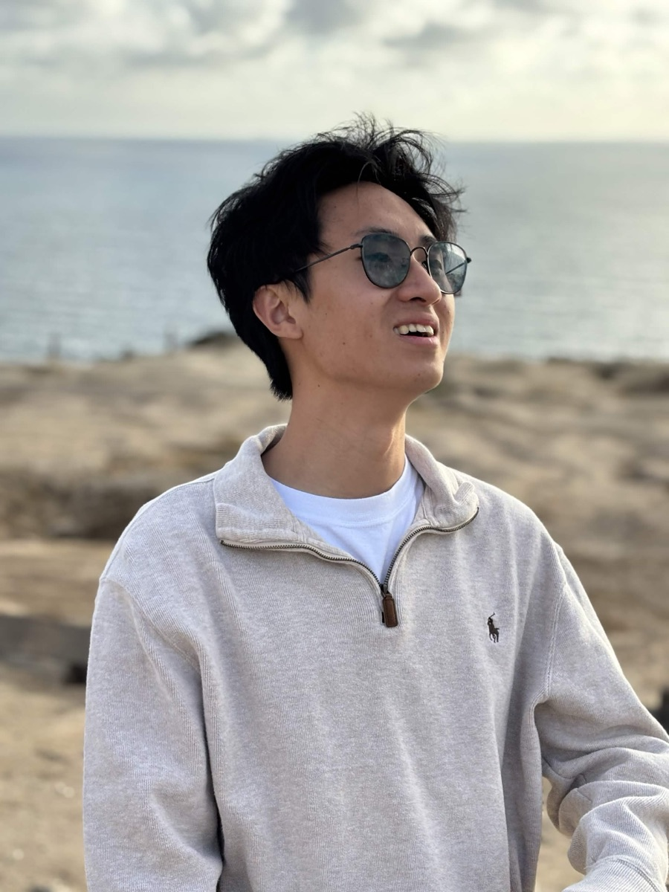
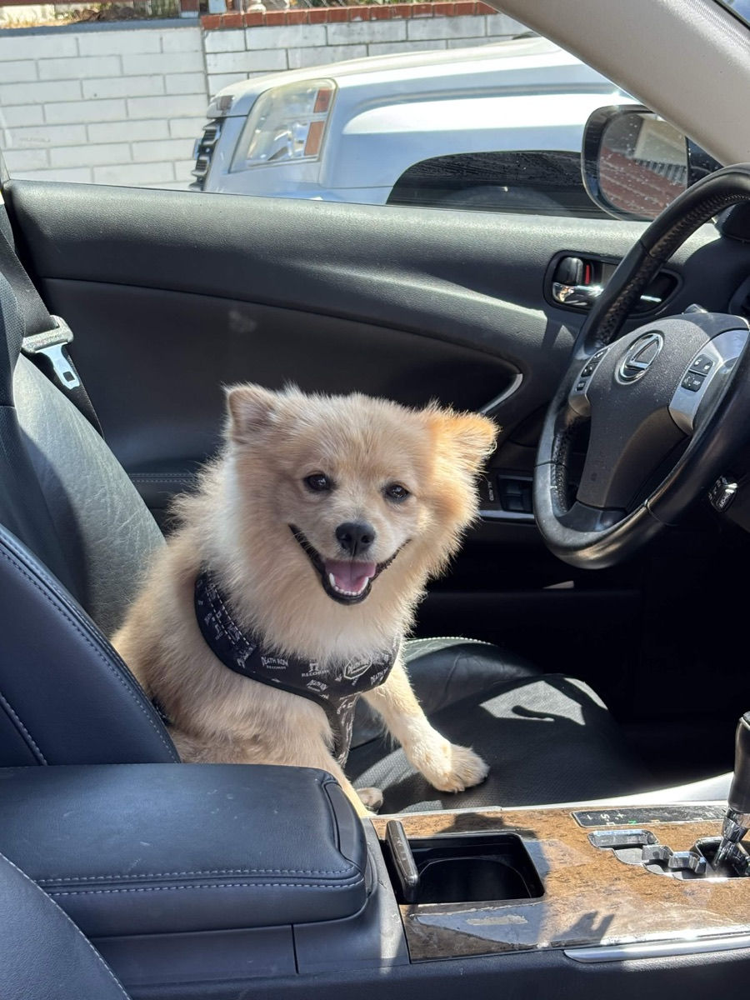
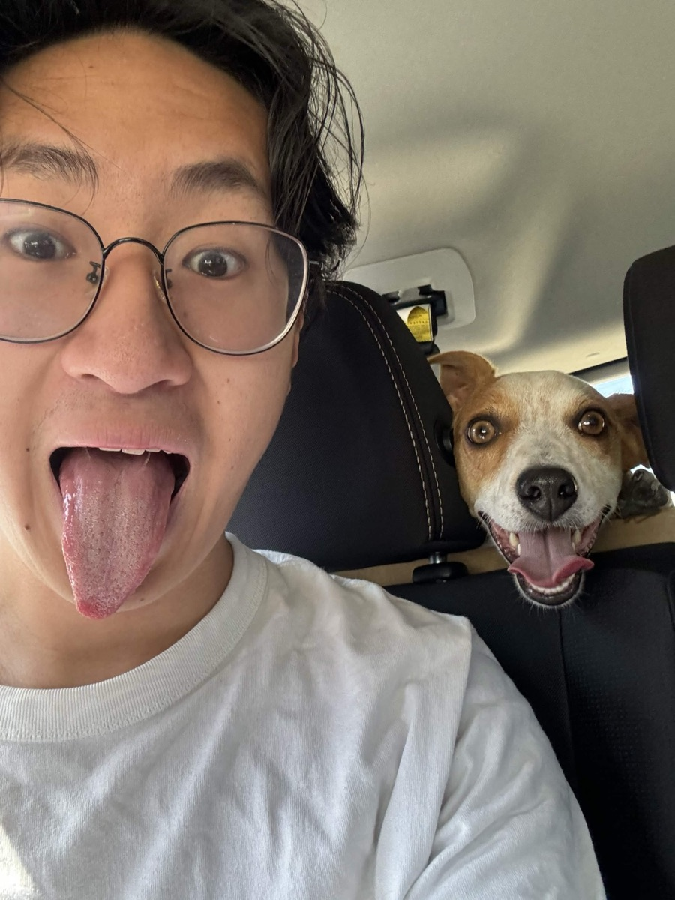
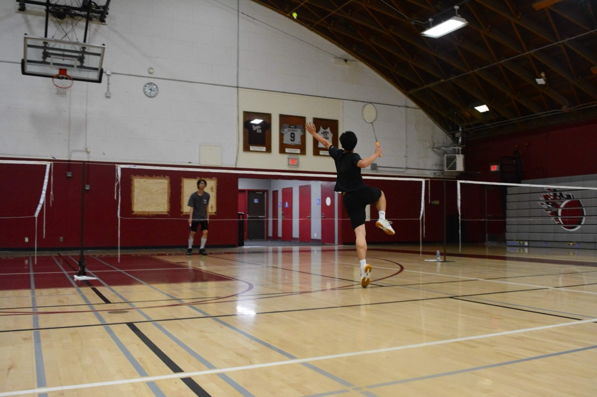
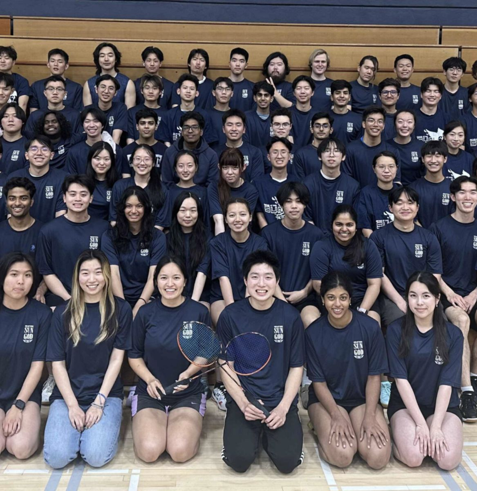
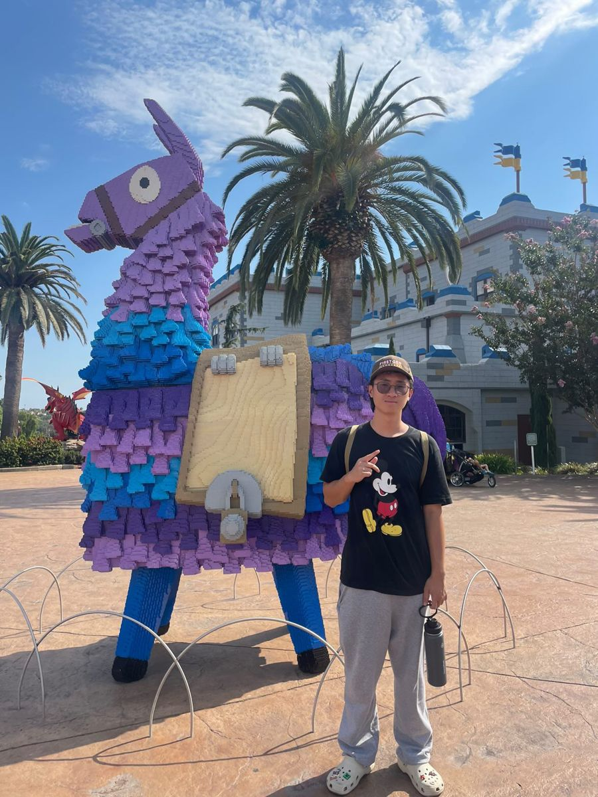
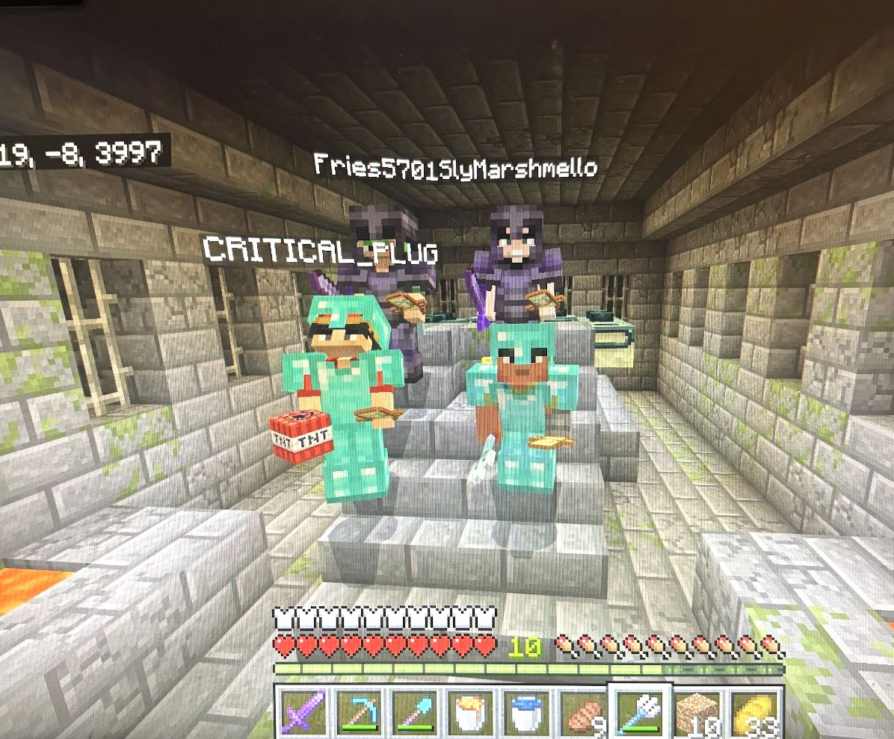
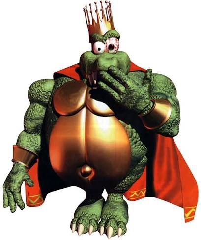

About me
My background
I am Hieu Le, a fourth-year Mathematics–Computer Science student at the University of California, San Diego. I am a full stack developer working on websites and AI/ML projects.
My experience includes delivering AI features for Treevah, a B2C SaaS AI startup, building a MERN-stack travel planner with a team at the San Diego Supercomputer Center, and machine learning research under Ryan Kastner on real-time ecological monitoring systems for the San Diego Zoo.

My dogs


I have two dogs! Poppy (Pomeranian) and Peanut (Jack Russell Terrier).
Sports
I enjoy playing badminton, pickleball, soccer, and basketball, as well as hiking and lifting weights.




Video games
My favorite games to play are Minecraft, Fortnite, Valorant, Super Smash Bros. Ultimate, and Roblox.


